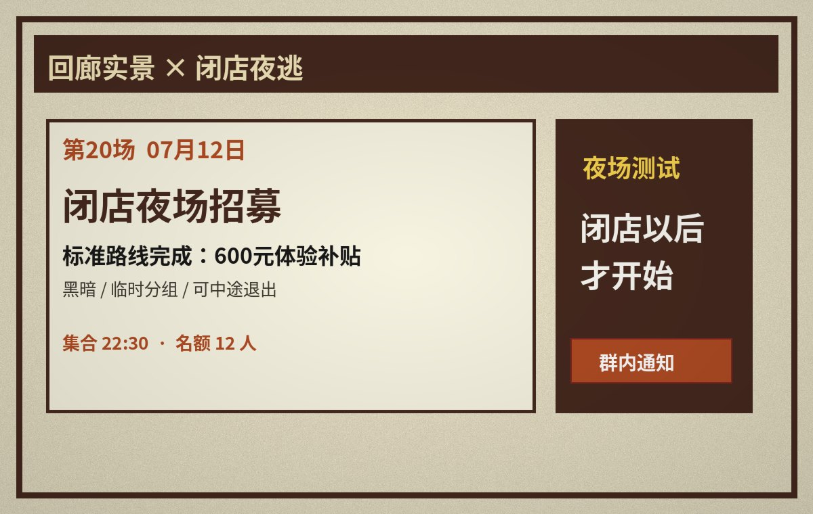
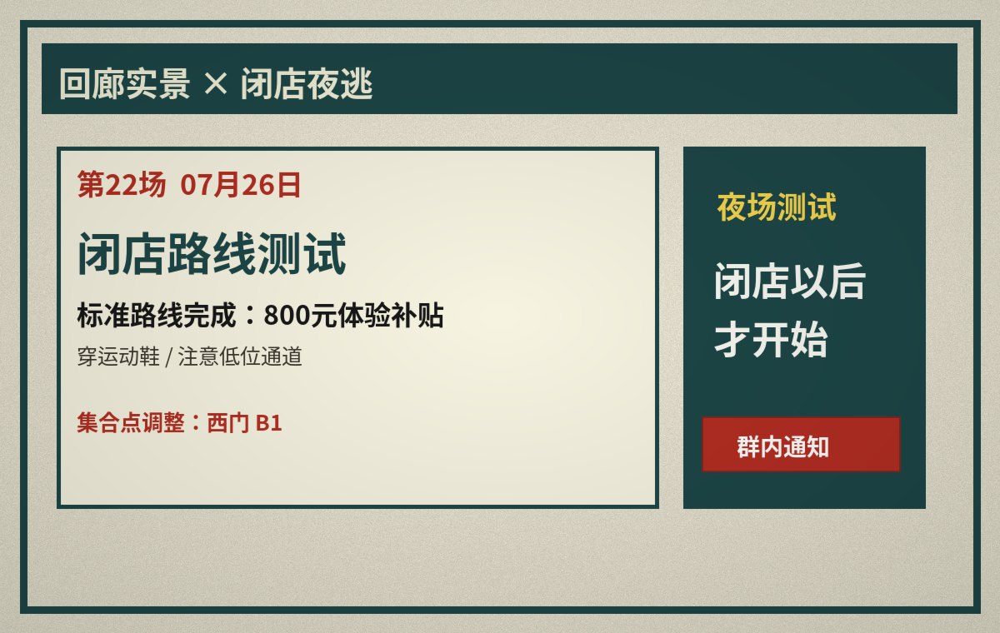
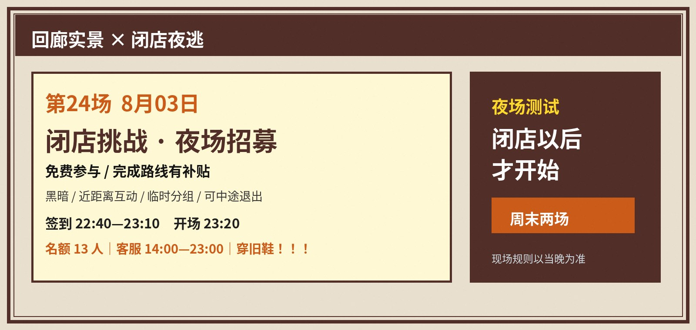
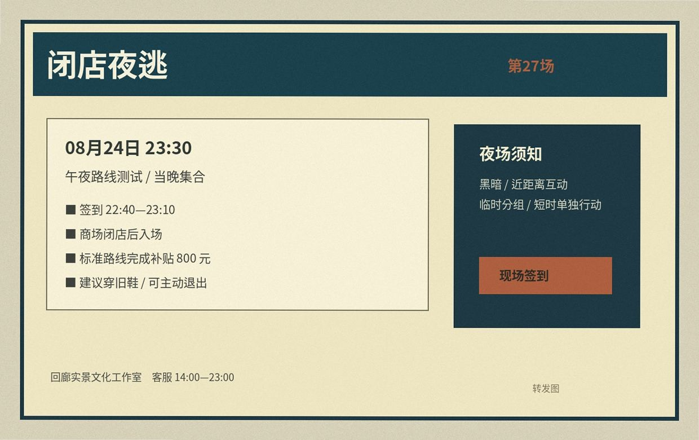

07/12
22:06
22:06
第20场早期版

标题还是“闭店夜场招募”，标准补贴写 600 元，集合时间也比后来早十分钟。这一版第一次出现“标准路线可主动退出”，但还没有“穿旧鞋”。
群文件转存
分辨率较低
分辨率较低
这里不是完整宣传史。运营换过两次群，部分海报只剩转发图，文件名和发布日期也不总能对上。下面保留的是目前还能找到的几版。

标题还是“闭店夜场招募”，标准补贴写 600 元，集合时间也比后来早十分钟。这一版第一次出现“标准路线可主动退出”，但还没有“穿旧鞋”。

集合点改到西门 B1，补贴提高到 800 元。运营在群里解释过，说是“路线加长以后统一调的”。同一天的客服记录第一次提醒“低位通道多，穿运动鞋”。

这一版开始把“闭店以后才开始”放到主视觉上。群里那张“三万元到账”截图也是第24场之后开始传的。海报没有写加时场，官网当时也没有入口。

“穿旧鞋”第一次被印到海报上。第27场结束后有人在群里做了“800块体能测试”结算图，后来几场都有人拿它开玩笑。寄存说明也从这一场开始强调：寄存牌只对应柜号，不作为离场凭证。

宣传口径已经基本固定：闭店后、800 元、13 人、可退出、穿旧鞋。9/18 早上同一张图被重新转发时，右下角多了“第30场暂停报名”的临时贴条。
物料存档只是群文件备份。集合点、客服时间和寄存方式有改动时，以当场通知为准。